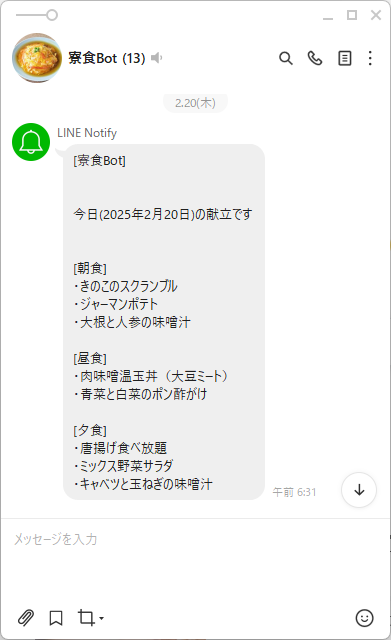
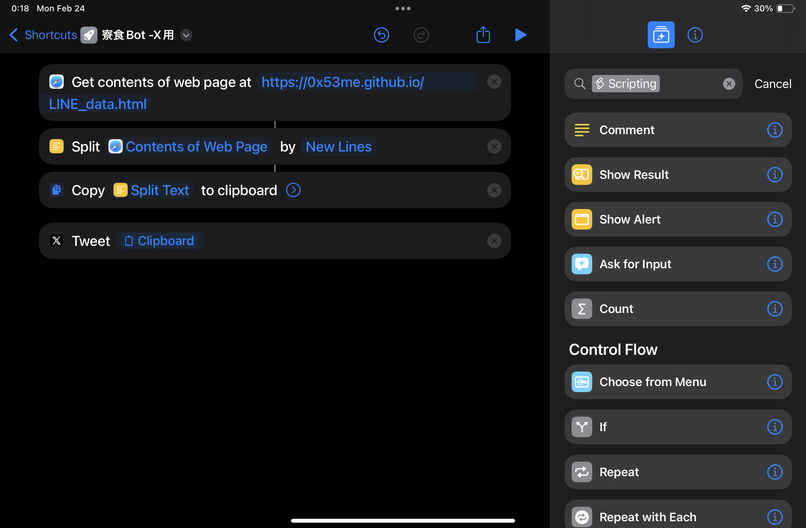

寮食Botを作った話。

0x53です。
寮食Botを作った経緯と仕組みを簡単に書こうと思います。
1. 寮食Botを作ろうと思った経緯
そもそも、今日の献立を見ようとすると
1.新居浜高専学寮HPにアクセス
2.学寮食堂のページへ
3.今月のPDFファイルを選択
4.今日の日付までスクロールする
という手順が必要なんですよね。
実際のPDF↓
学寮食堂公式ページより
(https://www.off.niihama-nct.ac.jp/gakuryo-a/kondate/ryoushoku.html)
今日の献立だけを見る には時間がかかるし、スマホだと少し見づらいんですよね。
ということで寮食Botを作ろうと思いました。
2. 寮食Bot(LINE版)
まず、初めに考えたのがLINEで毎朝、自動で寮食の献立を送信するというものです。
いろいろググっていると、Googleスプレッドシートのデータを自動でメール送信する記事と、 メールをLINEに自動転送する記事を見つけたので、 それらを参考にスプレッドシートに打ち込んだ寮食の献立データをメールで送信し、LINEに転送するというプログラムを作りました。
GAS(GoogleAppScript)というJavaScript系の言語?で作りました。
これを使うとGoogleのサービスを自動化できます。
製作期間は1週間ほどだったと思います。
(思いっきり試験期間中に作った記憶)
実際に送られてくるLINEはこんな感じです。

これを作ってから1年半以上問題なく毎日動いてます。
献立を手軽に見れるようになりとても便利になりました。
LINE Notifyというものを使っているんですが、
2025年3月31日でサービス終了らしく、使えなくなるのつらい (TT)
3. Webサイト版
LINE版寮食Botが使えなくなるので、作りました。
GithubPagesというものを使っているので、サーバー代がかからないです。
仕組みは.CSV(各項目が,で区切られたデータ)を読み込みHTML内で表示するというものです。
これもググって参考になりそうなものを見つけ、何とか動くものを作りました。
(HTMLとCSS初心者なのでおかしな部分あるもです。)
今後はコメントや評価機能もつけたいなと思ってます。
要望あれば連絡ください。
4. 寮食Bot(X版)
Web上で公開しているデータをiPadにもともと入ってある「ショートカット」というアプリを使って取得し、Xにポストするというものです。
言葉だとわかりにくいので写真を見せるとこんな感じ、

で、実際の投稿がこんな感じ
新居浜高専 寮食Bot
— 0x53 (@0x53me) January 7, 2025
今日(2025年1月7日)の献立です
[朝食]
・チキンナゲット
・玉葱のサラダ
・マカロニと野菜のスープ
[昼食]
・七草の和風スパゲティ
・豆苗の香味和え
[夕食]
・ハンバーグジンジャーソース
・ケチャップスパゲティー
・キャベツとえのきの味噌汁
昼特:プリン
このアプリには指定した時間に自動でショートカットを実行するという機能があるんですが、
Xに投稿するには投稿ボタンを手動で押してあげる必要があるんですよね。
つまり、Xの投稿に関しては半分手動でやってます。
5. 最後に
全部自己満で作ってます。
使ってくれるとうれしいです。